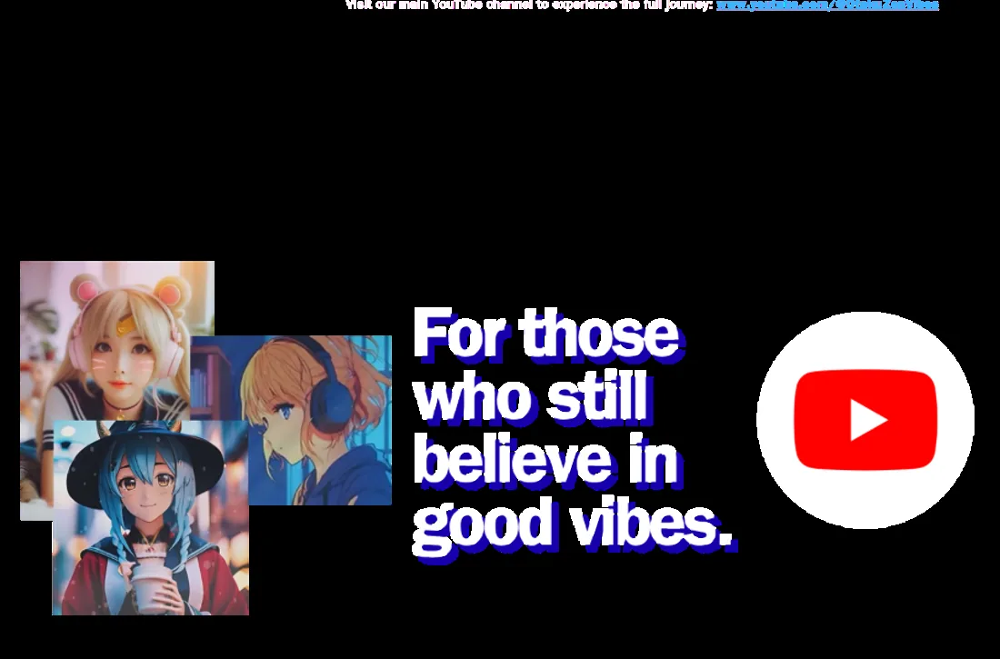
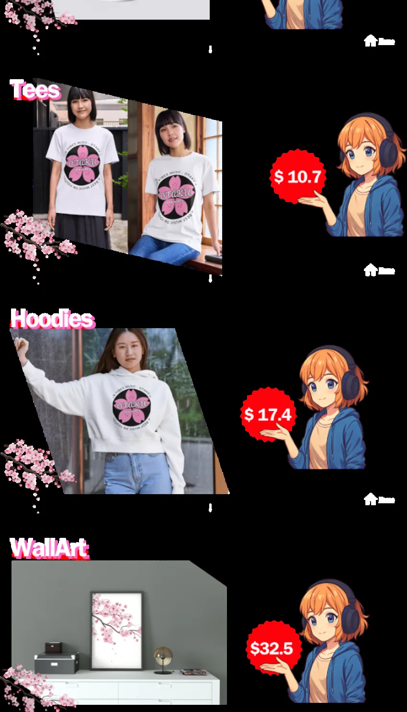

Quiet Focus
Study, work, writing, reading, concentration and deep focus moments.
Anime lofi · club energy · experimental beats · deep focus
An anime-inspired music station for every mood.
What began as a love for anime aesthetics, calm soundscapes, and lofi atmospheres has grown into a wider universe of music, visuals, and digital creativity.
Start here
This is the first stop of the page: a direct bridge to the channel and the full Otaku Zen Vibes journey.
Latest drops
This block is prepared to show the last three uploads automatically once the YouTube Channel ID is added in script.js.
Until then, it keeps a clean fallback that sends visitors to your videos page.
About Otaku Zen Vibes
Welcome to Otaku Zen Vibes — an anime-inspired music station for every mood.
What began as a love for anime aesthetics, calm soundscapes, and lofi atmospheres has grown into a wider universe of music, visuals, and digital creativity. This is a place where different energies can live together: quiet focus, cozy coffee moments, deep reflection, tropical warmth, club energy, experimental beats, and high-intensity sounds made to move you.
For us, Otaku means imagination, color, characters, and the beauty of anime-inspired worlds. Zen is not only silence or meditation; it is balance, flow, good energy, and the right sound for the moment you are living. Vibes are everything music can make you feel.
Here you will find original music and visual experiences created with digital tools and artificial intelligence, blending lofi, jazzhop, EDM, club beats, tropical grooves, deep focus sounds, and experimental atmospheres.

Choose your frequency
Study, work, writing, reading, concentration and deep focus moments.
Warm morning loops, soft jazzhop textures and calm anime atmospheres.
Night moods, emotional soundscapes and cinematic introspection.
Summer rhythm, bright grooves, beach energy and color.
EDM, festival pulses, high-intensity drops and movement.
Digital creativity, strange beauty and sounds that feel different.
Wear the vibe
The merchandise should not feel like a separate store. It should feel like a collectible extension of the channel: visual identity, mood, character, and community.
Build audience first
Follow the vibe. Stay in the flow.
Visit our main YouTube channel to experience the full journey.
Enter the channel